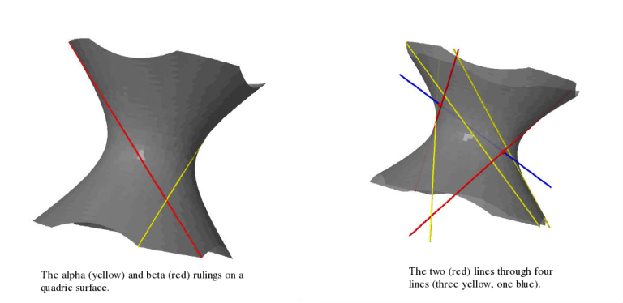

Lines through four lines
Lines through four lines
(Reposting this from an earlier blog which I gave up on, but liked the post so I added some pictures – all images produced using the amazing free alternative to Maple/Mathematica, Sage).
I was reading Fulton-Pandharipande ("Notes on stable maps and quantum cohomology") the other day and came across the classical result that there are exactly two lines passing through a generic quadruple of lines in \(\mathbf{CP}^3\). I encourage people to whom this fact is unfamiliar to convince themselves of it. It was unfamiliar to me and I found it hard to visualise, so I sat down and drew some pictures until I understood it.
Suppose for starters that three of the lines (call them \(A\), \(B\) and \(C\)) lie on a quadric surface. Recall that a quadric surface is ruled in two different ways by families of lines – call these lines alpha- and beta-curves. In the picture on the left they're yellow and red respectively.

The alpha-curves are all mutually disjoint, the beta-curves are all mutually disjoint and any alpha-curve intersects any beta-curve in exactly one point transversely. Lines in general position in \(\mathbf{CP}^3\) are disjoint, so our three lines are either all alpha- or all beta-curves. Let’s say they’re all alpha-curves for definiteness’s sake.
Our fourth line (\(D\), blue in the picture on the right) intersects the quadric surface in precisely two points. But each intersection point has a unique beta-curve passing through it. These two (red) beta-curves intersect \(A\), \(B\), \(C\) (the yellow lines) and \(D\) (the blue line) and these are the two lines in question. QED
Now how do we see that any three general lines lie on a quadric surface? Fix a point on line \(A\) and draw all the lines from this point which hit line \(B\). Precisely one of these will hit line \(C\). This means that for each point \(p\) of \(A\) there is a unique line \(L_p\) through that point which hits both \(B\) and \(C\). These lines trace out a quadric surface containing the three lines as you vary the point on \(A\). Note that the \(L_p\) are precisely the beta-curves of the resulting surface.
Cute.
Comments
On the original post, commenter Vijay Sharma asked:
Hello Jonny, I too have been reading a lot on Gromov Witten Invariants and trying to gain a little more grip at it. And I has this fact only through GW invariants. Thanks for the post for more intuitive explanations with drawings. May I ask you drew these pictures in Sage? Regards, Vijay
In answer, here is the Sage code I used to produce the pictures. It's probably highly suboptimal, and I haven't run it for many years now to check it.
var('x,y,z')
p = implicit_plot3d(x^2+y^2-z^2==1, (x, -2, 2), (y, -2,2), (z, -2,2),opacity=0.8,color='grey')
u = var(‘u')
q = parametric_plot3d((u, 1, u), (u, -2, 2),color='yellow',thickness=5)
r = parametric_plot3d((u/sqrt(2), u/sqrt(2)+sqrt(2), u+1), (u, -3, 1),color='yellow',thickness=5)
s = parametric_plot3d((u/sqrt(10), -3*u/sqrt(10)+sqrt(10), u-3), (u, 0, 5),color='yellow',thickness=5)
t = parametric_plot3d((u, 0.7, 0.5*u+0.1),(u, -2, 2),color='blue',thickness=5)
n = (0.1-sqrt(0.1^2-4*(1-0.5^2)*(0.7^2-0.1^2-1)))/(2*(1-0.5^2))
m = 0.5*n+0.1
k = (0.1+sqrt(0.1^2-4*(1-0.5^2)*(0.7^2-0.1^2-1)))/(2*(1-0.5^2))
f = 2
g = -5
a = parametric_plot3d((-u/sqrt(1+f^2), -f*u/sqrt(1+f^2)+sqrt(1+f^2), u-f), (u, -1, 4),color='red',thickness=5)
b = parametric_plot3d((-u/sqrt(1+g^2), -g*u/sqrt(1+g^2)+sqrt(1+g^2), u-g), (u, -7, -3),color='red',thickness=5)
c = parametric_plot3d((n,0.7,m),(u,-2,2),color='red',thickness=15)
d = parametric_plot3d((k,0.7,0.5*k+0.1),(u,-2,2),color='red',thickness=15)
show(p+q+r+s+t+b+a+c+d,frame=False)
Commenter Grisvard asked:
"These lines trace out a quadric surface containing the three lines as you vary the point on A" Why a quadric?
My answer was as follows. I think I'm right in saying that \(PGL(4,C)\) acts transitively on generic triples of lines in \(P^3\): at least this is heuristically justified by a dimension count – the group has complex dimension 15 and the space of triples of lines has dimension 12. This could be made rigorous if you check that the infinitesimal action is surjective at your favourite configuration of lines (provided your favourite triple is generic!) because it would give you a Zariski open \(PGL(4,C)\)-orbit in the space of line-triples (which you now take as your definition of "generic"). It also acts transitively on smooth quadric surfaces (because any two nondegenerate quadratic forms are equivalent over \(C\)). Therefore it suffices to fix your favourite configuration of three lines and check that it's contained in a quadric surface.